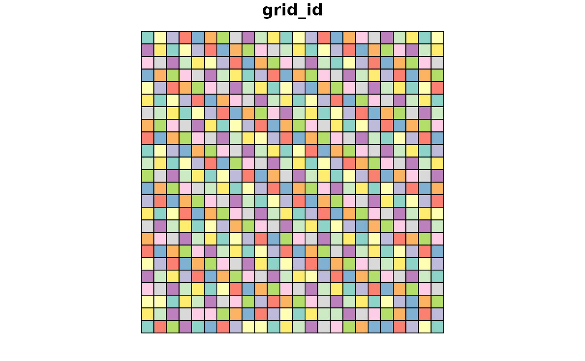

This function generates a spatial grid over a geographic extent and assigns grid IDs to points.
It also computes cell centroids and, for geographic grids (in degrees or minutes), a mapsheet code.
Finally, it summarizes specified columns within each grid cell while preserving additional metadata
provided via extra_cols.
Usage
generate_grid(
data,
x_col = "x",
y_col = "y",
grid_size = 0.5,
sum_col_range = NULL,
extra_cols = NULL,
crs_epsg = 4326,
unit = c("deg", "min", "sec", "m")
)Arguments
- data
A data frame containing point data with x and y coordinates.
- x_col
Character. Column name for x-coordinates (default: "x").
- y_col
Character. Column name for y-coordinates (default: "y").
- grid_size
Numeric. Size of the grid cells. For geographic data (EPSG:4326) this is in degrees.
- sum_col_range
Numeric vector. Range of columns to summarize within each grid cell.
- extra_cols
Character vector of additional columns to retain in the output (optional).
- crs_epsg
Numeric. EPSG code for the coordinate reference system (default: 4326).
- unit
Character. One of "deg", "min", "sec", or "m". For geographic data use "deg" (default).
Value
A list containing:
grid: terra raster object of the generated grid with unique grid IDs.grid_sf: sf object of the grid as polygons, with added centroid coordinates and (if applicable) mapsheet codes.block_sp: Data frame summarizing grid cell contents (including extra_cols if provided).
Examples
set.seed(123)
data <- data.frame(
x = runif(100, -10, 10),
y = runif(100, -10, 10),
species1 = rpois(100, 5),
species2 = rpois(100, 3),
recordedBy = sample(LETTERS, 100, replace = TRUE)
)
grid_result <- generate_grid(data, x_col = "x", y_col = "y",
grid_size = 1, sum_col_range = 3:4,
extra_cols = c("recordedBy"))
#> Generating grid of size 1 deg...
print(grid_result$block_sp)
#> grid_id centroid_lon centroid_lat mapsheet obs_sum spp_rich recordedBy
#> 1 104 -4.5 -7.5000908 W005S08BB 8 2 V
#> 2 108 -0.5 -7.5000908 W001S08BB 6 2 Z
#> 3 110 1.5 -7.5000908 E001S08BB 8 2 W
#> 4 116 7.5 -7.5000908 E007S08BB 10 2 E
#> 5 130 -2.5 -6.5000796 W003S07BB 8 2 T
#> 6 132 -0.5 -6.5000796 W001S07BB 3 2 X
#> 7 133 0.5 -6.5000796 E000S07BB 15 2 R
#> 8 135 2.5 -6.5000796 E002S07BB 2 1 Q
#> 9 149 -7.5 -5.5000681 W008S06BB 5 2 J
#> 10 149 -7.5 -5.5000681 W008S06BB 8 2 P
#> 11 151 -5.5 -5.5000681 W006S06BB 11 2 H
#> 12 152 -4.5 -5.5000681 W005S06BB 11 2 J
#> 13 154 -2.5 -5.5000681 W003S06BB 13 2 S
#> 14 162 5.5 -5.5000681 E005S06BB 6 2 L
#> 15 163 6.5 -5.5000681 E006S06BB 4 1 D
#> 16 166 9.5 -5.5000681 E009S06BB 10 2 L
#> 17 173 -7.5 -4.5000562 W008S05BB 11 2 P
#> 18 179 -1.5 -4.5000562 W002S05BB 8 2 A
#> 19 186 5.5 -4.5000562 E005S05BB 7 2 O
#> 20 190 9.5 -4.5000562 E009S05BB 3 2 N
#> 21 197 -7.5 -3.5000440 W008S04BB 7 2 T
#> 22 204 -0.5 -3.5000440 W001S04BB 6 2 I
#> 23 207 2.5 -3.5000440 E002S04BB 7 2 Q
#> 24 208 3.5 -3.5000440 E003S04BB 4 2 K
#> 25 208 3.5 -3.5000440 E003S04BB 7 2 P
#> 26 208 3.5 -3.5000440 E003S04BB 11 2 U
#> 27 210 5.5 -3.5000440 E005S04BB 9 1 W
#> 28 220 -8.5 -2.5000316 W009S03BB 9 2 M
#> 29 223 -5.5 -2.5000316 W006S03BB 14 2 K
#> 30 224 -4.5 -2.5000316 W005S03BB 11 2 V
#> 31 226 -2.5 -2.5000316 W003S03BB 14 2 L
#> 32 232 3.5 -2.5000316 E003S03BB 3 2 C
#> 33 234 5.5 -2.5000316 E005S03BB 8 2 S
#> 34 235 6.5 -2.5000316 E006S03BB 7 2 J
#> 35 247 -5.5 -1.5000190 W006S02BB 14 2 M
#> 36 251 -1.5 -1.5000190 W002S02BB 7 2 F
#> 37 254 1.5 -1.5000190 E001S02BB 6 2 V
#> 38 258 5.5 -1.5000190 E005S02BB 12 2 J
#> 39 258 5.5 -1.5000190 E005S02BB 3 2 R
#> 40 260 7.5 -1.5000190 E007S02BB 7 2 B
#> 41 262 9.5 -1.5000190 E009S02BB 13 2 L
#> 42 270 -6.5 -0.5000063 W007S01BB 9 2 M
#> 43 275 -1.5 -0.5000063 W002S01BB 18 2 C
#> 44 275 -1.5 -0.5000063 W002S01BB 10 2 H
#> 45 285 8.5 -0.5000063 E008S01BB 7 2 G
#> 46 291 -9.5 0.5000063 W010N00BB 5 2 F
#> 47 295 -5.5 0.5000063 W006N00BB 9 2 K
#> 48 299 -1.5 0.5000063 W002N00BB 9 2 P
#> 49 303 2.5 0.5000063 E002N00BB 7 2 O
#> 50 304 3.5 0.5000063 E003N00BB 9 2 M
#> 51 317 -7.5 1.5000190 W008N01BB 7 2 Q
#> 52 317 -7.5 1.5000190 W008N01BB 5 2 S
#> 53 317 -7.5 1.5000190 W008N01BB 13 2 U
#> 54 320 -4.5 1.5000190 W005N01BB 7 2 O
#> 55 321 -3.5 1.5000190 W004N01BB 9 2 S
#> 56 325 0.5 1.5000190 E000N01BB 15 2 G
#> 57 332 7.5 1.5000190 E007N01BB 5 2 A
#> 58 343 -5.5 2.5000316 W006N02BB 12 2 R
#> 59 346 -2.5 2.5000316 W003N02BB 11 2 S
#> 60 352 3.5 2.5000316 E003N02BB 12 2 X
#> 61 354 5.5 2.5000316 E005N02BB 10 2 P
#> 62 356 7.5 2.5000316 E007N02BB 13 2 B
#> 63 358 9.5 2.5000316 E009N02BB 9 2 S
#> 64 364 -8.5 3.5000440 W009N03BB 3 2 J
#> 65 365 -7.5 3.5000440 W008N03BB 13 2 C
#> 66 372 -0.5 3.5000440 W001N03BB 10 2 B
#> 67 372 -0.5 3.5000440 W001N03BB 7 2 J
#> 68 376 3.5 3.5000440 E003N03BB 9 2 R
#> 69 387 -9.5 4.5000562 W010N04BB 6 2 U
#> 70 389 -7.5 4.5000562 W008N04BB 4 2 M
#> 71 395 -1.5 4.5000562 W002N04BB 6 2 Z
#> 72 402 5.5 4.5000562 E005N04BB 7 2 Q
#> 73 403 6.5 4.5000562 E006N04BB 5 2 E
#> 74 404 7.5 4.5000562 E007N04BB 9 2 Q
#> 75 415 -5.5 5.5000681 W006N05BB 10 2 J
#> 76 435 -9.5 6.5000796 W010N06BB 4 2 R
#> 77 438 -6.5 6.5000796 W007N06BB 7 2 I
#> 78 439 -5.5 6.5000796 W006N06BB 9 2 F
#> 79 450 5.5 6.5000796 E005N06BB 7 2 H
#> 80 459 -9.5 7.5000908 W010N07BB 11 2 I
#> 81 466 -2.5 7.5000908 W003N07BB 4 2 S
#> 82 473 4.5 7.5000908 E004N07BB 7 2 L
#> 83 477 8.5 7.5000908 E008N07BB 6 2 Y
#> 84 486 -6.5 8.5001015 W007N08BB 8 2 A
#> 85 489 -3.5 8.5001015 W004N08BB 7 2 L
#> 86 493 0.5 8.5001015 E000N08BB 5 2 D
#> 87 494 1.5 8.5001015 E001N08BB 7 2 G
#> 88 500 7.5 8.5001015 E007N08BB 3 2 X
#> 89 502 9.5 8.5001015 E009N08BB 7 2 L
#> 90 507 -9.5 9.5001117 W010N09BB 6 2 A
#> 91 513 -3.5 9.5001117 W004N09BB 6 2 D
#> 92 513 -3.5 9.5001117 W004N09BB 6 2 Z
#> 93 521 4.5 9.5001117 E004N09BB 4 1 Y
#> 94 524 7.5 9.5001117 E007N09BB 9 2 I
#> 95 59 -1.5 -9.5001117 W002S10BB 6 2 T
#> 96 84 -0.5 -8.5001015 W001S09BB 12 2 G
#> 97 86 1.5 -8.5001015 E001S09BB 5 1 O
#> 98 88 3.5 -8.5001015 E003S09BB 7 2 K
#> species1 species2
#> 1 6 2
#> 2 3 3
#> 3 5 3
#> 4 6 4
#> 5 6 2
#> 6 2 1
#> 7 5 10
#> 8 0 2
#> 9 4 1
#> 10 6 2
#> 11 4 7
#> 12 9 2
#> 13 8 5
#> 14 4 2
#> 15 4 0
#> 16 6 4
#> 17 4 7
#> 18 5 3
#> 19 3 4
#> 20 2 1
#> 21 5 2
#> 22 3 3
#> 23 6 1
#> 24 2 2
#> 25 3 4
#> 26 9 2
#> 27 9 0
#> 28 8 1
#> 29 7 7
#> 30 9 2
#> 31 10 4
#> 32 2 1
#> 33 5 3
#> 34 5 2
#> 35 7 7
#> 36 6 1
#> 37 3 3
#> 38 10 2
#> 39 1 2
#> 40 5 2
#> 41 8 5
#> 42 7 2
#> 43 9 9
#> 44 3 7
#> 45 4 3
#> 46 3 2
#> 47 4 5
#> 48 5 4
#> 49 5 2
#> 50 8 1
#> 51 3 4
#> 52 2 3
#> 53 6 7
#> 54 3 4
#> 55 7 2
#> 56 7 8
#> 57 3 2
#> 58 6 6
#> 59 6 5
#> 60 8 4
#> 61 8 2
#> 62 8 5
#> 63 6 3
#> 64 2 1
#> 65 8 5
#> 66 7 3
#> 67 4 3
#> 68 5 4
#> 69 3 3
#> 70 2 2
#> 71 4 2
#> 72 2 5
#> 73 4 1
#> 74 6 3
#> 75 7 3
#> 76 3 1
#> 77 4 3
#> 78 6 3
#> 79 3 4
#> 80 8 3
#> 81 2 2
#> 82 2 5
#> 83 4 2
#> 84 6 2
#> 85 6 1
#> 86 4 1
#> 87 6 1
#> 88 2 1
#> 89 5 2
#> 90 4 2
#> 91 2 4
#> 92 3 3
#> 93 4 0
#> 94 5 4
#> 95 3 3
#> 96 10 2
#> 97 5 0
#> 98 3 4
plot(grid_result$grid_sf["grid_id"])
